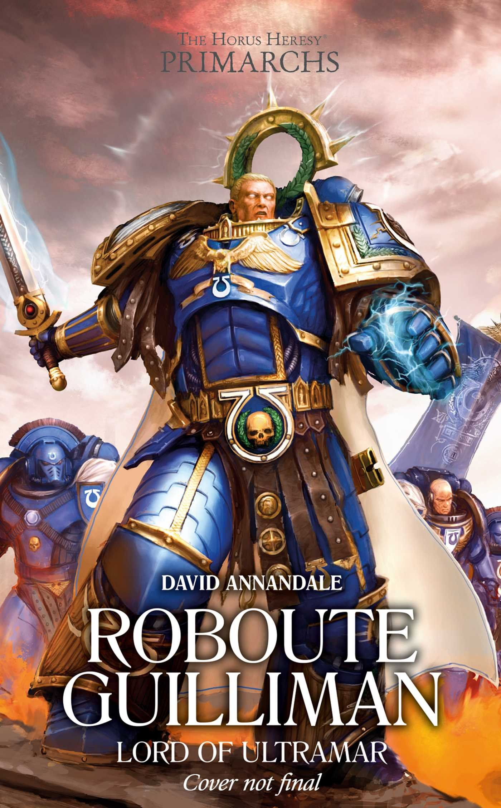

ROBOUTE GUILLIMAN: LORD OF ULTRAMAR

Author: David Annandale
Format: Novel
Guilliman leads the Ultramarines against a rival empire on the ork-held world of Thoas. He must choose how to fight without losing sight of the future he hopes to build.
Introduction reviewed against Black Library’s description on 2026-09-27. The publisher page may contain spoilers.
Publication facts: publisher source, checked 2026-09-26.
Open this work in the interactive Archive to track reading progress and explore related works.
Take the three-question memory check for this work. The quiz contains story spoilers.